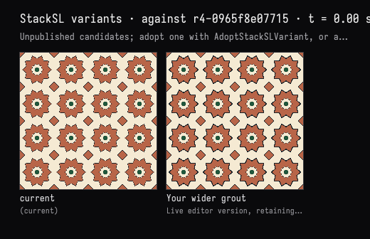

The person's grout, the model's look
The recorded exchange: the request, the tool activity, every image the tools returned to the model, and its reply. Expand tool activity to read the steps; open an image to see it full size.
- Edited the program by hand:
0.006 0.009 <edge abs smoothstepbecame0.012 0.015 <edge abs smoothstep. The edit went through the property the editor writes; it was not checked in, so the study reported the editor as dirty.
I thickened the grout myself in the editor. Look at what I changed and keep it — but check the small green centres: with the wider grout, are they still readable? Fix them if not.
Tool activity · 3 steps
Starting AI conversation
InspectStackSLStudy finished (101 ms)
Waiting for model
You changed the outer-star grout thresholds from 0.006–0.009 to 0.012–0.015. I’ll preserve those exact values. The green centers and their own outlines are unchanged in the code; I’ll check how they read in the rendered pattern.
Tool activity · 3 steps
TryStackSLVariants finished (794 ms)
Waiting for model
Completed

Your wider grout is preserved exactly: 0.012–0.015, replacing 0.006–0.009 around the outer stars.
I rendered your editor version and checked it alongside the previous one. The green centers are still readable, with a distinct cream surround separating them from the terracotta. The wider outer grout doesn’t encroach on them.
No fix was needed, so I left your source untouched. Your editor version also passes the compilation check.
- Pressed Check in on the study card →
r5-dff520b30859“edited by hand”